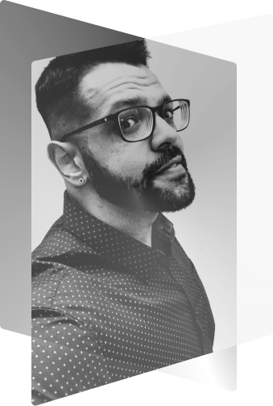

Desenvolvedor
Front End &
UX / UI Designer
Localizado no Rio de Janeiro

Localizado no Rio de Janeiro
Opero em alguns seguimentos da TI e Design, dentre eles,
desenvolvimento web, infraestrutura de rede e montagem e manutenção de
computadores.
Possuo afinidade com CFTV e telefonia. Trabalho com
HTML, CSS,
JavaScript,C/C++ e
Banco de Dados.
Detenho de conhecimento em design com manuseio das ferramentas
Figma, Adobe XD,
UX e UI Design.
Minha formação, atualmente, está em progresso, pois estou cursando bacharelado> em Sistema de InformaçãopelaUNESA🎓, entretanto, já estudei pela PUC-Rio durante dois anos e estou sempre me cerfificando e estudandno cada vez mais.